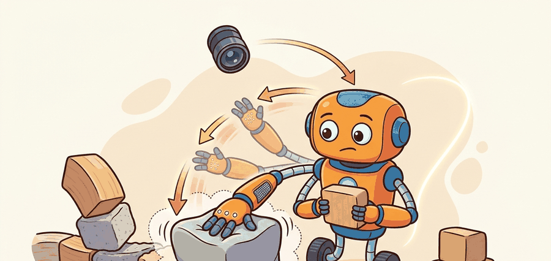

"The world stops being polite when insertion begins."

Figure 42.3A: Contact-rich control works by shaping interaction, not by pretending the world will always match a nominal geometry model.
A Contact-Control Lab Note
Big Picture
Contact-rich tasks such as insertion, wiping, scraping, opening, and assembly expose the limits of open-loop pose control because the environment must help shape the motion.
This section frames contact-rich manipulation as impedance shaping under uncertainty. The robot must deliberately trade position error against force response while keeping the contact mode inside a safe region.
It pulls together dynamics, control, and manipulation learning by making contact residuals first-class evidence. Those residuals are often the difference between a robust insertion routine and a fragile scripted demo.
Action Is The Test
In contact-rich tasks, zero position error is often the wrong objective. The correct objective is a bounded interaction that lets the environment guide the final alignment.
Figure 42.3.1: Contact-rich control works by shaping interaction, not by pretending the world will always match a nominal geometry model.
Theory
The canonical model is an impedance or admittance law layered over a task-space trajectory. Instead of commanding a rigid path, the controller allows compliant deviation so contact forces can guide alignment.
This is where contact mode reasoning matters. Sliding, sticking, insertion, jamming, and separation create very different residual signatures, and recovery depends on distinguishing them quickly.
The controller measures pose and wrench, predicts the desired compliant response, executes bounded motion, and routes to recovery when residual forces indicate jamming, slip, or misalignment. A useful trace logs pose error and wrench history together, not in separate tools.
Algorithm: Compliance-Gated Contact Loop
Select a task-space frame and define compliant axes before commanding any interaction motion.
Start with low-speed guarded contact to estimate normal direction and residual wrench bias.
Switch to impedance or admittance control during interaction and monitor force signatures continuously.
If residuals cross a jamming threshold, back out, update the contact estimate, and retry from a safe approach pose.
Worked Example
# Detect a likely jam from force growth without progress.
force_n = [3.1, 4.8, 6.5, 8.2]
travel_mm = [1.0, 1.5, 1.8, 1.9]
force_slope = round((force_n[-1] - force_n[0]) / (len(force_n) - 1), 2)
travel_gain = round(travel_mm[-1] - travel_mm[0], 2)
jam = force_slope > 1.4 and travel_gain < 1.2
print({"force_slope_N_per_step": force_slope, "travel_gain_mm": travel_gain, "jam_detected": jam})
Code Fragment 42.3.1 uses paired force and travel signals to separate productive insertion from jamming.
Expected output: The expected result flags a jam because force rises quickly while travel barely increases. In a real controller, that combination should trigger backing out and re-estimating the contact geometry.
Library Shortcut
Drake and MuJoCo are strong for contact-rich simulation, while MoveIt and cuMotion still help with pre-contact staging. Learned policies are useful here only when the contact residuals remain visible and the safety thresholds stay explicit.
Practical Recipe
Choose a compliant frame and document which axes are stiff, compliant, or guarded.
Collect baseline wrench traces for nominal success before tuning recovery logic.
Set jamming and slip thresholds from same-panel traces, not from intuition alone.
Back out along a safe axis before retrying, rather than grinding deeper into the contact.
Save at least one successful and one failed force-time plot with the same axis scale.
Common Failure Mode
A contact controller tuned only on success episodes often becomes dangerous. Without failed traces, the thresholds that should stop the robot tend to drift upward until jamming looks normal.
Practical Example
Peg-in-hole assembly, cable insertion, and drawer opening all benefit from compliant control because the last millimeters are dominated by contact geometry and small misalignments, not by free-space trajectory quality.
Memory Hook
If your insertion plot looks like a mountain and your displacement plot looks like a sidewalk curb, the robot is arguing with the environment and losing.
Research Frontier
Research is pushing toward visuo-tactile contact policies, differentiable contact simulation, and large contact-rich datasets. The engineering bar remains the same: bounded forces, interpretable residuals, and safe retreat logic.
Self Check
Can you point to the exact residual pattern that distinguishes productive contact from jamming in your task?
Contact-rich manipulation is where robotic intelligence becomes obviously embodied. The environment participates in the computation, because surfaces, compliance, and friction effectively perform part of the alignment if the controller lets them.
This section is also a good place to teach complementarity conceptually. The robot should know whether it is pressing, sliding, or separated, because each mode implies a different controller and different evidence signature.
Practical Tool Choices For This Section
Tool or Library
Role in the Topic
Builder Advice
Drake
Contact simulation and optimization
Use it when you want explicit residual reasoning and constraint inspection.
MuJoCo
Fast contact rollouts
Useful for policy tuning and repeated interaction traces.
Force-torque sensors
Residual monitoring
Treat wrench history as a primary artifact, not a side-channel debug stream.
Mini Lab
Simulate a peg insertion with three clearance values and one angular misalignment. Plot force and travel together and label which runs jammed, inserted, or slipped.
The first split is whether the controller made progress before the spike. If no progress occurred, suspect geometry or staging. If partial progress occurred, suspect compliance tuning or mode transition logic.
Widely used contact simulator for manipulation learning and controller prototyping.
Key Takeaway
Contact-rich manipulation succeeds by regulating interaction forces and mode transitions, not by pretending that perfect positioning removes the environment from the loop.
Exercise 42.3.1
Design a jam detector for an insertion task using force slope, travel gain, and contact duration. State what recovery action should follow each failure label.